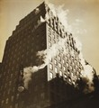

|
Photography
Begun in 1973, the Institute’s collection of photographs spans the history
of the medium as fine art, from the 1860s to the present. More than 7,500
items strong, the collection consists primarily of 20th-century American
work, but increasing emphasis on photographs from all countries is providing
new scope and dimension to our already rich and diverse holdings.
The Department of Photography has developed and continues to thrive because
of the active and generous support of loyal donors. Notably, the very
earliest acquisitions were funded by Kate Butler and Hall James Peterson.
Their initiative inspired others, including Harry Drake, Martin Weinstein,
and Fred and Ellen Wells. The Petersons continued gifts for nearly six
years formed the core of the collection. More recently, the creation of
the Alfred and Ingrid Lenz Harrison Fund, along with the establishment
of the Harrison Photography Galleries, has given the department enormous
momentum. These superb new galleries are devoted to the presentation of
our permanent collection.
Over the years, the Department of Photography has been committed to using
the collection for educational purposes, and the Institute now serves
as a major resource for the five-state area. Numerous exhibitions drawn
from the collection have also traveled to smaller institutions, and high
school and college students frequently visit our galleries and print study
area.
|
Highlighted Work
|  |
Berenice Abbott
New York
20th century
gelatin silver print
H.8-5/8 x W.7-15/16 in.
The Ethel Morrison Van Derlip Fund
More>> |
Browse
Selected
Works from the Photography Collection
Electronic Postcards
Send
a postcard from our Photography Collection
Collection Related Online Programs:
• Get the Picture: Thinking about Photographs
• Animal Locomotion:
Edweard Muybridge
|